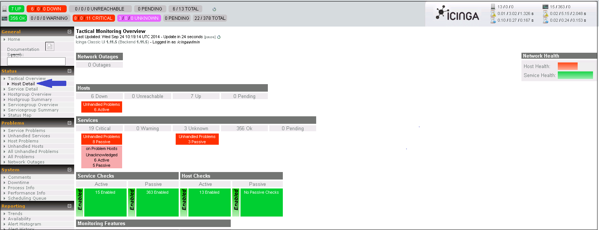
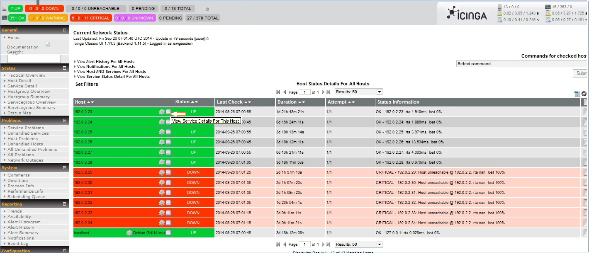
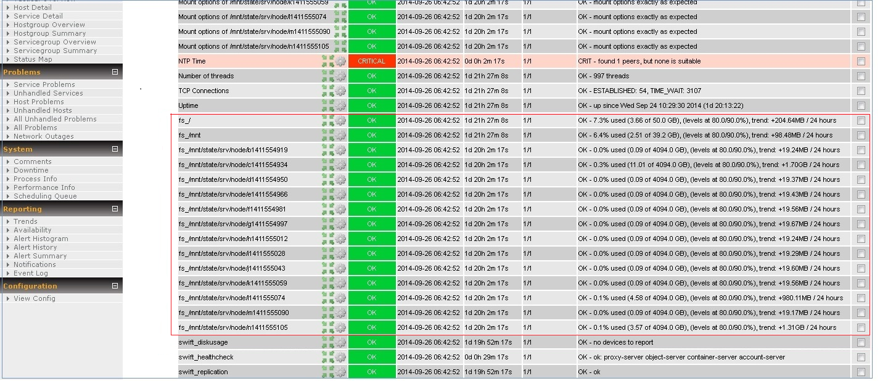
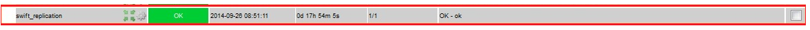
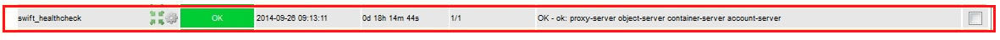

HP Helion 1.0 OpenStack®: Icinga Service
The Icinga service, which runs in the undercloud, helps cloud admins monitor the disk usage of Swift storage node(s).
HP Helion OpenStack® allows you to monitor Swift cluster in any of the followings ways:
Prerequisites
- HP Helion OpenStack® cloud is successfully deployed.
- All nodes are functional by default as they are part of cloud deployment
- The Icinga service is active and running in the undercloud
Monitoring Disk Usage
Icinga checks the following:
- That the file systems used by the servers are mounted.
- The disk usage (by percentage) for the devices in use by Swift (/srv/node).
Note that other file systems such as /usr or /var are not monitored.
Perform the following steps to monitor the usage of Swift disk:
In the undercloud Horizon dashboard, log in to the Icinga Dashboard (http://<undercloud_IP>/icinga/). The default login credentials are as follows:
- Username: icingaadmin
- Password: icingaadmin
Click Status on the left panel and then click Host Details.
In the Host column, click the icon next to the host IP (with tooltip that shows View Service Details For This Host) of the Swift storage node that you want to monitor.
The Service Status Details For Host All Hosts page opens.
Click the target Swift node IP address to open the Service Status Details For Host <Swift node IP address > to view the disk usage of the selected Swift node.

Status Messages for disk usage monitoring
The Icinga service presents the following messages to indicate the disk usage status of the cloud:
| Status | ||
|---|---|---|
| OK | No devices to report | This message appears on Proxy servers where there are no account, container or object servers configured. This is a normal status. |
| OK | Percent used | Percent disk usage for devices used by Swift (/srv/node) |
| WARNING | Disk space low | The percentage used space of one of the disk drives exceeds the user defined threshold(Default set to 85% for HP Helion OpenStack 1.0). It is important to prevent Swift devices becoming full because it is difficult to recover if this happens. To resolve, add more devices to the rings or ask your users to delete objects. |
| FAIL | Disk space critically low | The available space on one of the disk drives has dropped below the "fallocate_reserve" given in |
| FAIL | Not mounted | The named device is not mounted. The device may have failed to mount or was unmounted due to an error. To resolve, stop all Swift processes, mount all devices and restart Swift. |
| UNKNOWN | No devices to report |
Monitor Node Replication Status using Icinga
Cloud admins can use the icinga service running in the undercloud to monitor the replication status of nodes within the Swift deployment.
Perform the following steps to monitor the replication status:
In the undercloud, log in to the Icinga Dashboard (http://<undercloud_IP>/icinga/) The default login credentials are as follows:
- Username: icingaadmin
- Password: icingaadmin
Click Status on the left panel and then click Host Details.
In the Host column, click the icon next to the host IP to see Host Status Details For All Hosts.
- Click the target Swift node IP address to open the Service Status Details For Host IP Address to see the replication status of the selected Swift node.

Status Messages for replication monitoring
The Icinga service presents the following messages to indicate the replication status of the cloud:
| Status | ||
|---|---|---|
| OK | Ok | Everything is fine. |
| WARNING | Replication not progressing | An account, container or object replicator process has not finished a complete scan recently(elapsed time exceeded the threshold defined) . Examine the account-replicator, container-replicator and object-replicator logs to see which process is "stuck". Restarting the relevant process usually resolves the issue. |
| FAIL | Replication never completed | The named replication process has never run on this node. Check that the replicator has been configured and started. Examine the log files to see if the replicator process has reported problems. |
Monitoring the Health of Services using Icinga
Cloud admins can use the Icinga service running in the undercloud to monitor the health status of Account, Container, Proxy, and Object services.
You can monitor the health status of the swift-proxy, swift-account, swift-container and swift-object services by following these steps:
In the undercloud Horizon dashboard, log in to the Icinga Dashboard (http://<Undercloud_IP>/icinga/). The default login credentials are as follows::
- Username: icingaadmin
- Password: icingaadmin
Click Status on the left panel and then click Host Details .
In the Host column, click the icon next to the host IP of the Swift storage node to open Service Status Details For Host All Hosts.
Click the Swift node IP address to open the Service Status Details For Host Swift node IP address to view the health status of the selected Swift node.

Status Messages for health monitoring
The Icinga service presents the following messages to indicate the health status of the cloud:
| Status | ||
|---|---|---|
| OK | OK | |
| WARNING | Disabled : proxy-server | Service is temporarily disabled. The proxy-server has been disabled by the creation of a file in the "disable_path" config parameter. This is often used to temporarily disable a proxy server by removing it from the load balancer or high availability system. To resolve this issue, delete the file indicated in the "disable_path" configuration parameter. |
| FAIL | No response | The named server is not responding. The process may not be running or may be stuck in some way. To resolve, start or restart the server. |